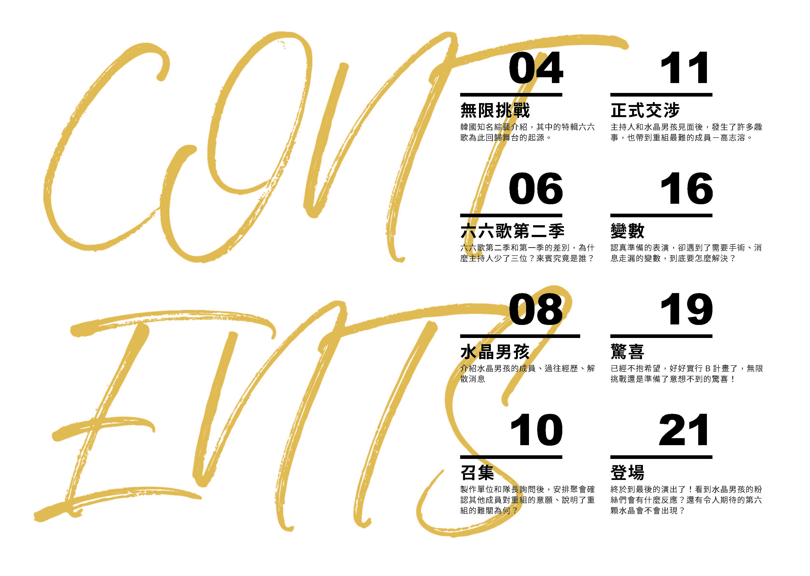
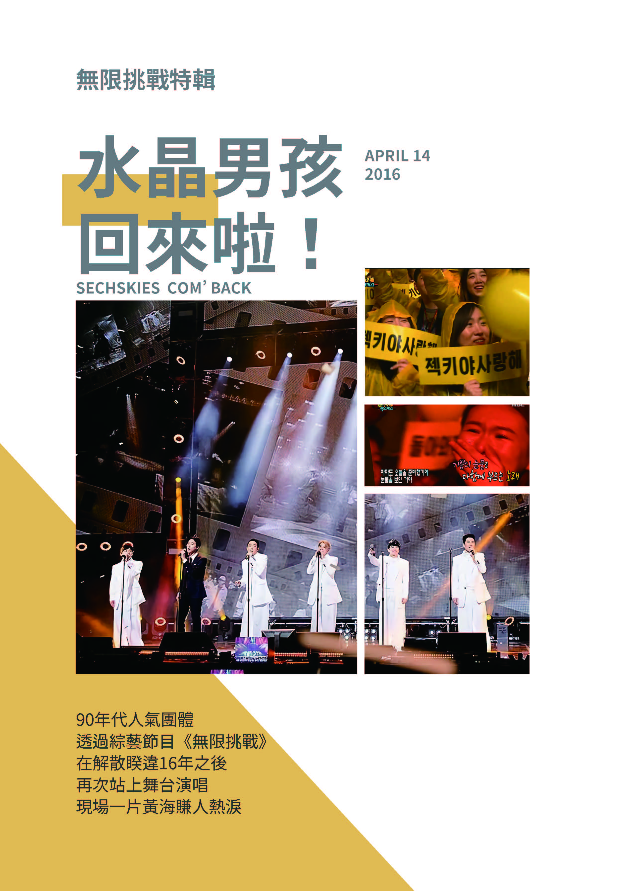
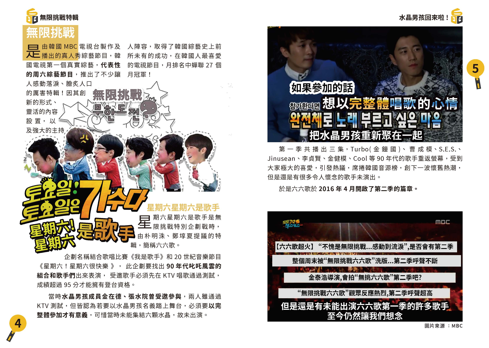

04 無限挑戰
《無限挑戰》是韓國綜藝史上指標性的真人秀節目。「星期六星期六是歌手（六六歌）」企劃，成為水晶男孩 2016 回歸舞台的關鍵起點。
第一季掀起 90 年代懷舊熱潮，雖然水晶男孩未能完整出演，卻留下「總有一天要六人完整回到舞台」的遺憾伏筆。



《無限挑戰》是韓國綜藝史上指標性的真人秀節目。「星期六星期六是歌手（六六歌）」企劃，成為水晶男孩 2016 回歸舞台的關鍵起點。
第一季掀起 90 年代懷舊熱潮，雖然水晶男孩未能完整出演，卻留下「總有一天要六人完整回到舞台」的遺憾伏筆。
第二季改成「為單一團體打造完整回歸敘事」，保密層級更高，連主持群都縮小到劉在錫與 HAHA，避免消息提前走漏。
從開場的復古裝扮、試探式線索到真正揭曉團體身份，節目節奏在搞笑與懸念間拉開這場 16 年重逢序章。
1997 出道後迅速登頂，與同世代頂流並列，短短三年創下極高銷量與舞台紀錄，卻在 2000 無預警解散，留下集體創傷。
16 年間六人從未以水晶男孩名義完整合體，這次企劃不只是回憶，而是回應當年未說完的離別。
製作組先與隊長殷志源交涉，再透過隱藏攝影機確認成員意願。大家都希望重組，卻同時知道最困難的拼圖是離開演藝圈多年的高志溶。
這個階段的重點不是舞台，而是「願不願意再次站在一起」的心理門檻。
主持人與成員深度對話，回顧解散緣由、舞台記憶、KTV 挑戰與游擊演唱會規則。笑鬧之間，團魂逐漸浮現。
同時，節目也把高志溶議題正式擺上檯面：如果不是完整體，這次回歸是否還成立？
排練期間接連出現傷病、手術需求與消息外流，原本理想的游擊演唱會計畫屢次被迫改寫，團隊陷入 B 計畫陰影。
在體力與心理都被拉到極限的情況下，成員仍選擇撐住，只為把久違舞台交回給等待 16 年的小黃。
當所有人幾乎接受「不完整」時，節目仍悄悄推進最後安排。高志溶與成員的情感張力在此段達到最高點。
這份驚喜不是綜藝反轉，而是把六顆水晶的空位真正填回舞台。
眼罩揭開後，滿場黃海與哭聲同時湧現。從《請記得我》到安可，《離別曲》在那一晚變成了「重逢證詞」。
2000 的缺憾，在 2016 終於補上。這一頁不是結束，而是團體與粉絲共同完成的回歸章節。